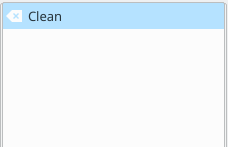
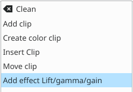
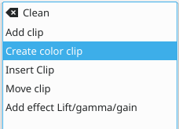
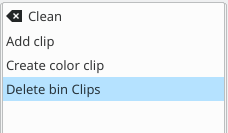
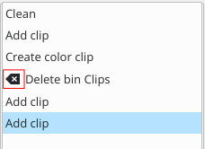

View Menu — Undo History¶
Contents
There may be times when you want to quickly restore your project to the state it was in several changes ago. Instead of repeatedly executing single undo operations, it might be more efficient to jump right to the operation in question – if you could easily locate it.
{kind=link}
That’s where View > Undo History comes in. It opens a dockable window which lists all the changes made to your project in the order they were made. When a project file is first opened, the window looks like Figure 1.
{kind=link}
Each operation you perform from then on gets added to the list, as shown in Figure 2. Notice that the most recent operation you have performed is highlighted.
{kind=link}
In this example, if you wanted to undo the last three operations with one click, all you have to do is click on the Create color clip entry and those three changes will be reversed in one fell swoop. At this point, if you are unhappy with undoing those changes, you can easily redo them by clicking on any of the entries which are still in the list.
{kind=link}
However, if you decided that reverting to that Create color clip entry looked good and you then made another change to the project, the three remaining operations that were in the list in Figure 3 will be flushed from the buffer and no longer available. They will be replaced by the new operation you just performed. See the result in Figure 4.
{kind=link}
Whenever you save your project, the icon that looks like a broom with the red X is repositioned next to the most recent operation in the list. Figure 5 shows three additional operations which were performed after the file save shown by the circle. After saving the file, you can still revert back to changes which were made before the save.